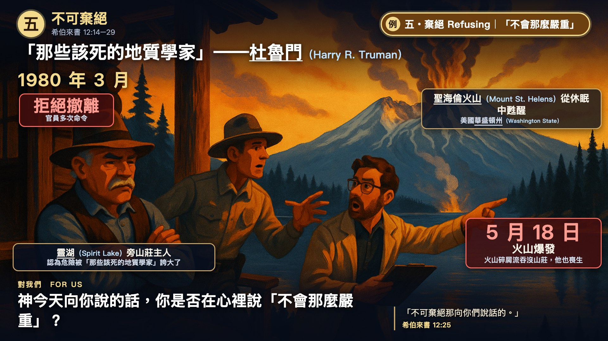

← 世界觀察 World Watches
希伯來書五．不可棄絕 (Heb 12:14–29) 的生活例證
杜魯門與聖海倫火山
Truman 1980
案例說明 Case description
「那座山不會怎樣」——杜魯門（Harry R. Truman）與聖海倫火山（Mount St. Helens）（1980）
1980 年 3 月，華盛頓州（Washington State）的聖海倫火山（Mount St. Helens）從休眠中甦醒。山腳靈湖（Spirit Lake）旁山莊的主人哈利・杜魯門（Harry R. Truman），在官員多次命令下仍拒絕撤離，認為危險被「那些該死的地質學家」誇大了。5 月 18 日火山爆發，火山碎屑流吞沒他的山莊，他也喪生。
來 12:25：「不可棄絕那向你們說話的。」棄絕，常帶著幽默和勇氣的樣子；「因為我們的神乃是烈火」（12:29）。神今天向你說的話，你是否在心裡說「不會那麼嚴重」？
資訊圖 Infographic

講道短片 Sermon clip (used during the sermon)
精選短版 Core cut（講道時用）
聖海倫火山：五到九分鐘的毀滅（Mount St. Helens: destruction in five to nine minutes）
長度 Length：8 秒 / 8 s · 有原聲 original sound
來源 Source：美國地質調查局 USGS (USGS) · 日期 Date：2010年5月10日發布（影像拍攝於1980年） (released May 10, 2010 (footage shot 1980))
出處 Credit：製作：Stephen M. Wessells (Producer: Stephen M. Wessells) · 授權 Licence：公有領域；有原聲 (public domain; original sound)
電影完整片段 Full clip(s) (used in the sermon movie)
完整片段 Full clip 1/3（電影版）
爆發前兩個月：科學家監測火山（Two months before: scientists monitoring the volcano）
長度 Length：17 秒 / 17 s · 原聲＋中文插讀 original sound + Chinese term read-ins
來源 Source：美國地質調查局 USGS (USGS) · 日期 Date：2010年5月10日發布（影像拍攝於1980年） (released May 10, 2010 (footage shot 1980))
出處 Credit：製作：Stephen M. Wessells (Producer: Stephen M. Wessells) · 授權 Licence：公有領域；有原聲 (public domain; original sound)
完整片段 Full clip 2/3（電影版）
1980年5月18日：噴發柱（May 18, 1980: the eruption column）
長度 Length：22 秒 / 22 s · 原聲＋中文插讀 original sound + Chinese term read-ins
來源 Source：美國地質調查局 USGS (USGS) · 日期 Date：2010年5月10日發布（影像拍攝於1980年） (released May 10, 2010 (footage shot 1980))
出處 Credit：製作：Stephen M. Wessells (Producer: Stephen M. Wessells) · 授權 Licence：公有領域；有原聲 (public domain; original sound)
完整片段 Full clip 3/3（電影版）
爆發後：230平方英里的毀滅區（Afterwards: the 230-square-mile blast zone）
長度 Length：21 秒 / 21 s · 原聲＋中文插讀 original sound + Chinese term read-ins
來源 Source：美國地質調查局 USGS (USGS) · 日期 Date：2010年5月10日發布（影像拍攝於1980年） (released May 10, 2010 (footage shot 1980))
出處 Credit：製作：Stephen M. Wessells (Producer: Stephen M. Wessells) · 授權 Licence：公有領域；有原聲 (public domain; original sound)
來源與延伸閱讀 Source & further reading
講章段落 Sermon passage：希伯來書 12:14–29 · 完整講道包 Full sermon package：希伯來書講道包